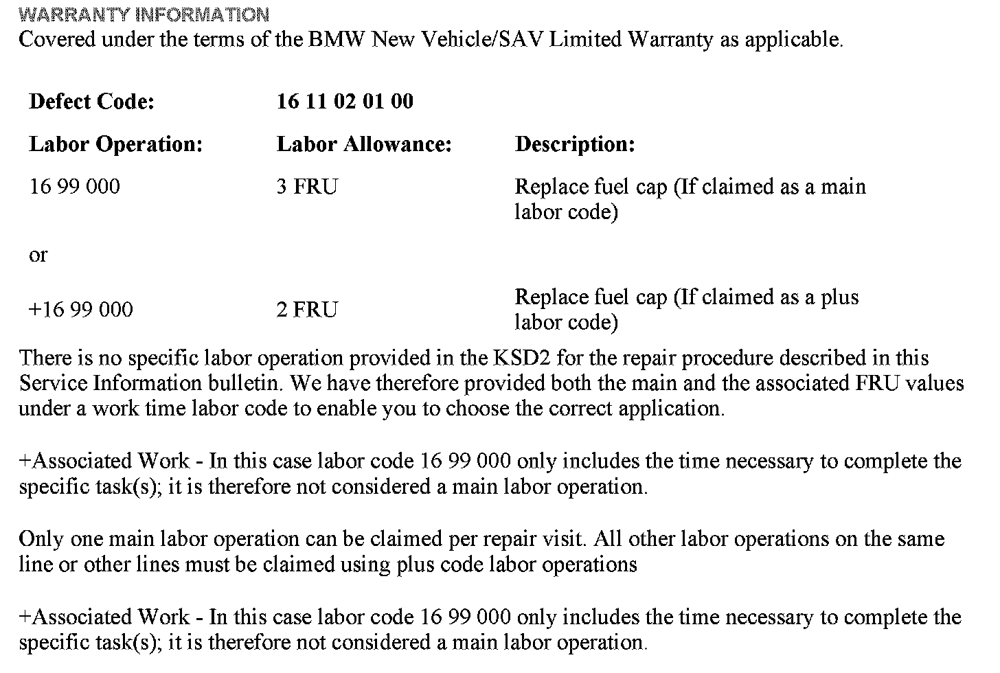

Fuel System - Fuel Cap Tether Is Broken Or Lost
SI B16 11 10Fuel Supply Systems
April 2011
Technical Service
SUBJECT
Fuel Cap Tether Broken or Lost
MODEL
All
SITUATION
The customer complains that the fuel cap rubber tether is broken or is lost because it has become dislodged from the fuel cap and body of the vehicle.
PROCEDURE
If either of these situations is encountered, replace the fuel cap and tether using the appropriate cap part number described in EPC.

WARRANTY INFORMATION